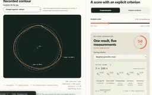
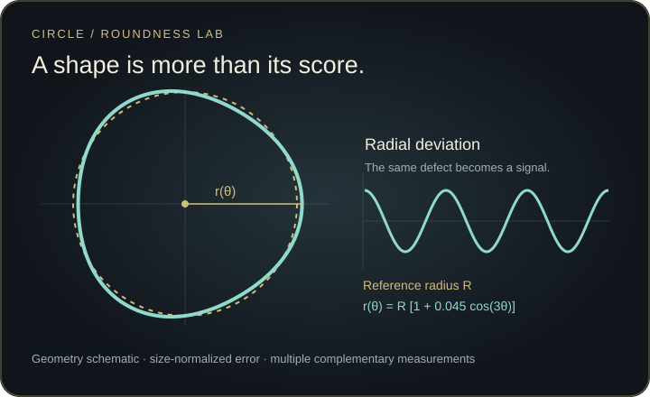

A simple game becomes a geometric problem
Several plausible definitions of roundness react differently to dents, lobes and local roughness.
What should closeness to a circle mean? Draw a loop, inspect radial error, curvature and harmonics, then compare scoring rules against counterexamples. Scale-normalized measurements expose defects that a single convenient score can hide.
Explore connections
Make the geometric choices visible before reducing a drawing to one number.
Keep the original stroke and show any accepted closure seam.
Resample by arc length and separate drawing size from dimensionless shape error.
Compare radius, minimum-zone width, compactness, curvature and harmonics.
Change aggregation and inspect defects, scale changes and smoothing sensitivity.
Several plausible definitions of roundness react differently to dents, lobes and local roughness.
Circle fits, a numerical minimum-zone annulus, curvature and radial spectra expose complementary errors.
Compare aggregate policies and an explicit absolute-error baseline; distinguish shape quality from capture eligibility.
Draw-a-perfect-circle games turn a contour into a number, but a score can conceal large defects or reward an outline merely because it is small. Roundness Lab asks what the measurement should preserve: invariance to scale, sensitivity to visible departures, and a clear treatment of incomplete or unreliable input.
The baseline uses a stated scoring rule, without attempting to reproduce a particular online game. Counterexamples show which defects each measurement notices and which it misses.
The lab computes least-squares radial error, an approximate minimum-zone annulus, isoperimetric compactness, normalized curvature and radial Fourier harmonics. A fixed resampling and smoothing procedure makes the declared score reproducible, while separate diagnostic plots expose sensitivity to scale.
Weighted geometric, arithmetic and weakest-component policies show how a strong component can—or cannot—compensate for a weak one. Weights and thresholds are explicit design choices, not a perceptual ground truth or a calibrated metrology standard.
A near-complete stroke can be closed with a visible straight segment or a bounded tangent-matched bridge. Large gaps and ambiguous returns are rejected rather than silently completed. The exported report separates the original stroke, the analyzed points and any segment added to close the loop.
Uniformly shrinking a resolved contour preserves its dimensionless shape score. A separate size/coverage eligibility rule addresses tiny drawing submissions without changing mathematical roundness. This separates the quality of the shape from the evidence supplied by its capture.

Recorded examples · 1Interface and technical resultThe recorded view keeps the result beside the controls and intermediate explanation.＋